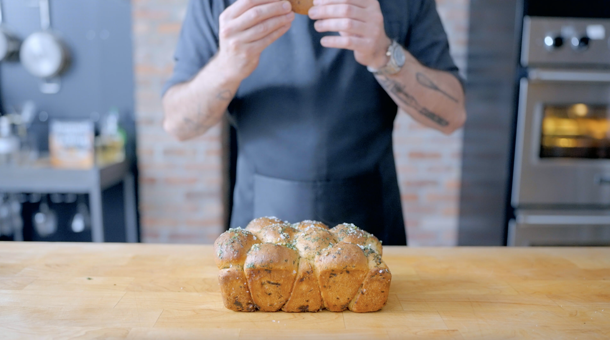

The Babish Monte Cristo Monkey Bread recipe

Fantastic, Magical, Shareable monkey bread
This soft sweet sticky pastry is sure to leave a stain. This bread is perfect when you're invited
to your sister-in-laws house! Her beautiful screaming children will surely enjoy this cake. So perfect for making messes.
Ingredients
- 500 g bread flower
- 7 g instant yeast
- 50 g granulated sugar
- 100 g whole milk, warm (85 degrees F)
- 200 g water, warm (85 degrees F)
- 7 g kosher salt
- 85 g unsalted butter, cubed + soft (70-80 degerees F)
- Non-stick spray
- Deli honey ham
- Powedered sugar
- Raspberry jam
Steps
- Combine the flour, yeast, and sugar in the bowl of a stand mixer.
- Evenly combine the dry ingredients using a whisk or fork.
- Add the milk, water, and salt to the bowl. With the mixer fitted with a dough hook attachment, combine the dough on medium-low speed until almost homogeneous.
- Begin adding the butter, one cube at a time, and waiting until each cube is incorporated before adding another one until all of the butter has been added.
- Increase the speed to medium-high and mix until the dough is smooth, elastic, and clears the sides of the bowl, about 6-8 minutes.
- Transfer the dough to a large greased bowl and cover it with plastic wrap.
- Let the dough proof until about doubled in size, about 1-2 hours depending on the warmth of the room.
- Meanwhile, grease 1 large tube or bundt pan or loaf pan or muffin tin generously with non-stick spray.
- In a small bowl, combine the ham and cheese. Toss to combine.
- Remove the dough from the bowl and place it on a lightly oiled work surface. Divide and shape the dough into even golf-ball-sized portions. *If using a muffin tin, make portions half the size.
- Roll the dough balls in the melted butter and then in the ham and cheese mixture. Place them into the prepared baking pan(s).
- Loosely cover the pan(s), and allow the dough to proof for another 45 minutes - 1 hour, until puffed.
- Meanwhile, preheat the oven to 350 °F.
- Once risen, remove the plastic wrap from the pan(s).
- Bake the monkey bread for 30-35 minutes, turning halfway through, until the dough is cooked through (200-205 °F) and golden brown on top.
- Allow the bread to cool for 10 minutes, then flip it onto a serving platter of your choice. Serve warm with a sprinkle of powdered sugar and jam.